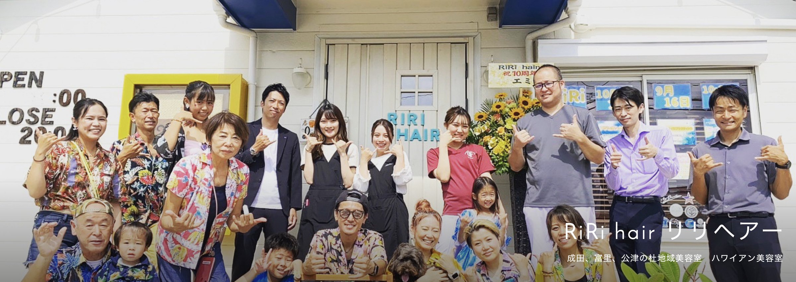
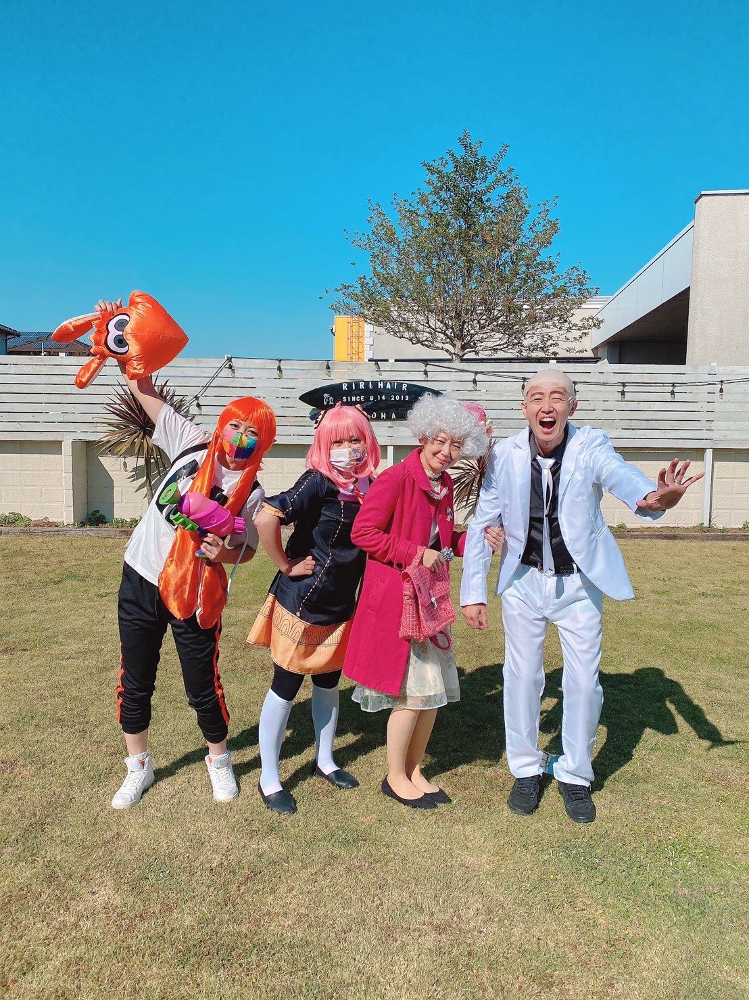
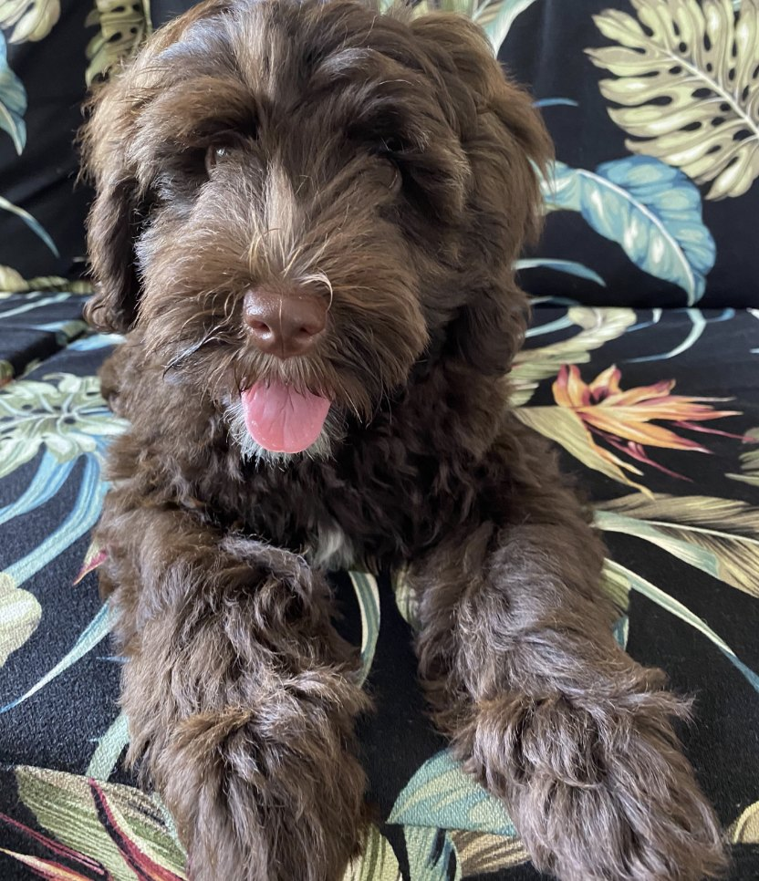

成田市のハワイアン美容室 RiRi hair｜スタイリスト・アシスタント募集
やりたい事を、
現実にするお店。
「なるべく、スタッフのやりたい事を現実にしてあげたい。」
代表のこの言葉どおり、RiRiは休みも、技術も、お店の中身も、スタッフの「〜したい」から形にしてきました。
スタイリスト 月給20万〜35万円アシスタント 月給20万〜30万円

- 7割お客様のうち
家族層の割合 - 2日毎週の休み
（月曜・火曜） - 2年スタイリスト
デビューの目標 - 3席セット面
（半個室） - 2013年オープン
（成田市並木町）
※リジョブ掲載の募集内容と公式サイトの記載より。
あなたの「〜したい。」に、
RiRiが今できていることで答えます。
ちゃんと休みたい。
RiRiでは毎週、月曜と火曜が休み。
完全週休2日です。
- 春季・夏季・正月休暇各5日（定休日と合わせて）
- 勤務時間早番 9:00〜／遅番 12:00〜21:00
- 時短勤務・時間帯の希望相談できます
休日を多く、勤務時間のゆとりや練習時間の確保など今までの経験とは違う新たな環境を作ることを強みに置いてます。

手荒れを気にせず働きたい。
RiRiではシャンプーに、
1番こだわっています。
美容師の手荒れをなるべく無くしたい。薬剤はお肌に優しく、スタッフの手荒れが少ないものを厳選しています。
- シャンプーオープンからアジュバンを使用
- シャワー炭酸泉で水道水の塩素を除去

自信を持ってお客様に入りたい。
RiRiではマンツーマンで教えます。
講習会費はお店が負担します。
なるべくお金の負担を少なく、無理のない教育育成に励んでいます。スタイリストは2年を目標にデビュー。アシスタントは毎月の技術テストでランクアップしていきます。
- RiRiの技術ブラシを使わないハンドブロー、2ヶ月持つカット
- 幅を広げる技術着付け、ヘッドスパ、ヘアセット、まつげパーマ
新しいことをやってみたい。
RiRiでは毎年、何かを新しく
始めています。
「毎年、何か変化をもたらしたい一心で」。お知らせに残っている、ここ数年の「始めたこと」です。
- 2021年黒木式酸性ストレート（代表がアカデミー2期生）
- 2024年4月テラスにカフェ REI'sKitchen をオープン
- 2025年4月スカルプインクを導入
- 2025年8月マイクロナノバブル marbb を導入
美容室でも取り扱いが無いような技術も一緒に学べて幅広い提案も勉強できます。
仕事内容のほかに、
興味がある技術もお伝えください。
自分もきれいでいたい。
RiRiでは髪もネイルも、
お店でととのいます。
- ヘアチェンジ（月1回）無料
- ネイル無料
- 美容脱毛福利厚生として利用可
- 昼食テラスのカフェで支給
- ボディメンテナンス・ヨガ整体師・ヨガ講師が在籍
気分高めて仕事やプライベートにも充実できるようにしています。

仲のいい職場で働きたい。
RiRiでは休日に食事へ、旅行へ。
ハロウィンは全員、仮装で営業。
小さいお店の環境なので、スタッフとの距離をとても大事にしています。毎年のハロウィン仮装営業では、スタッフは仮装しながら本気で仕事します。お客様の投票で、その年の一番人気が決まります。

ハワイに行きたい。
RiRiでは社員旅行は、
2年ごとにハワイです。
店内に入った時の見ため、香り、聞こえるBGM、スタッフのファッション、ドリンクまでhawai。制服はアロハシャツとエプロンを支給します。海や開放感を好きな方には、とても雰囲気のいいお店です。
スタッフの1日（遅番の例）
※ここはサンプルです。実際には RiRi のスタッフの1日の流れに差し替えます（勤務時間は実際の内容です）。
- 出勤・引き継ぎ
早番のスタッフから午前の様子を聞いて、アロハシャツで店に出ます。
- 午後のお客様
ご家族でのご来店が多い時間。お子様のカットも担当します。
- 食事・休憩
テラスのカフェ REI'sKitchen のごはんを交代でいただきます。
- 夕方のお客様
1席ずつ離れた半個室で、ご相談をじっくり聞きます。
- 練習・マンツーマン指導
予約の合間や営業後に、先輩と技術の確認をします。
- 片付け・退勤
ライトアップされた庭を見ながら、おつかれさまでした。
スタッフに聞きました
※ここはサンプルです。実際に働くスタッフへのインタビュー・写真に差し替えます。
Aさん（サンプル）
- RiRiに入って、やりたかった事は叶いましたか。
- ここに実際のスタッフの回答が入ります。入社のきっかけや、相談して実現できたことを2〜3行で。
- 前の職場といちばん違うところは。
- ここに実際の回答が入ります。休みの取り方や、お客様との距離感など。
Bさん（サンプル）
- 技術の練習はどう進めていますか。
- ここに実際のスタッフの回答が入ります。毎月の技術テストや、マンツーマン指導の様子を2〜3行で。
- どんな人が向いていると思いますか。
- ここに実際の回答が入ります。
いっしょに働くスタッフ
スタイリスト2名、アシスタント1名、ネイリスト1名。それと看板犬が1頭います。

代表・スタイリスト
岡田 大輝
２ヶ月持つスタイルに自信があります。分からない部分はいつでもご相談下さい。

スタイリスト
入倉 唱湖
世界中の人たちを笑顔にする事が、私の夢です☆

アシスタント／着付け・まつげパーマ担当
岡田 明日香
RiRiで社会復帰をして、たくさんのお客様に出会え、色々なお話を聞く事が出来る毎日を楽しんでおります！

専属ネイリスト
奥山 輝実
ネイルサロン９年。２店舗の店長を経て、RiRiの仲間入りしました。RiRIオープン当初から通って、毎回オーナーのひろきさんに担当してもらってました。

看板犬
RUB（ラブ）
人大好き、遊ぶの大好き！！！ お店に来た時は遊んでね。
※公式サイトのスタッフ紹介から抜粋しています。これから入る方へ向けたメッセージをいただければ、差し替えます。
よくある質問
※リジョブ掲載の募集内容をもとにしています。
未経験でも応募できますか。
アシスタントは未経験の方も歓迎しています。マンツーマン指導と講習会のサポートがあり、スタイリストデビューは2年を目標にしています。
車で通勤できますか。
車・バイク通勤ができます。交通費も支給します（アシスタントは上限20,000円）。
勤務時間の相談はできますか。
早番（9:00〜）と遅番（12:00〜21:00）のシフト制です。時短勤務や、時間帯の要望もご相談ください。
売上のノルマはありますか。
ノルマはありません。スタイリストは基本給に歩合（10%〜）が付きます。
どんな人が活躍していますか。
お客様を好きになってくれる方、親身に相談を聞いたり、話したりと偽りの無い接客をしている人です。家族層が多いので、子供が好きで接し方が丁寧な方はとても安心感を持っていただけます。
応募してからの流れを教えてください。
リジョブの応募フォームから応募 → 面接の可否を電話・メール・マイページ上のメッセージのいずれかでお知らせ → 担当者と面接 → 採用決定 → 入社、の順です。
なるべく、スタッフのやりたい事を現実にしてあげたい。
先ずはお客様を大切にスタッフ同士が支え合えるお店にしたい。その思いが1番です。お互いの信頼と信用を大切に何事も真剣に取り組み楽しんで、共に助け合って充実した日々を向かいましょう！
RiRi代表 岡田 大輝
※リジョブ掲載の「PR」「お店の夢・想い」より。
募集要項
RiRiにご来店してくれるお客様を自分のお客様として自覚し大切に思ってくれるスタッフ。元気に笑顔で対応ができるスタッフ。お店の雰囲気に合わせられるスタッフ。そんな素直に取り組めるスタッフを求めています。
スタイリスト
- 雇用形態
- 正社員
※アルバイト・パート、業務委託での募集もあります。条件はお問い合わせください。 - 給与
- 月給 20万円〜35万円
スタイリスト基本給＋歩合（10%〜） - 仕事内容
- スタイリストとしての施術を中心としたサロン業務全般（着付け、ヘッドスパ、ヘアセットを含む）
- 勤務時間
- 週5回・シフト制・時短勤務OK
早番 9:00〜18:00／遅番 12:00〜21:00 - 休日
- 完全週休2日（毎週月曜日・火曜日）
春季、夏季、正月休暇 - 応募資格
- 美容師免許
スタイリスト、ジュニアスタイリスト、アシスタントの経験がある方 - 福利厚生
- 社会保険完備／インセンティブあり／ノルマなし／制服あり／交通費支給／月1のヘアスタイルチェンジ／社員旅行（2年ごとにハワイ）
- 勤務地
- 千葉県成田市並木町219-173（京成本線 公津の杜駅）
車・バイク通勤OK
アシスタント
- 雇用形態
- 正社員
- 給与
- 月給 20万円〜30万円
アシスタント基本給 20万円。技術テストを毎月行い、ランクアップ制になります。
試用期間 1ヶ月〜2ヶ月（期間中の月給 200,000円〜300,000円） - 仕事内容
- ヘアサロン全般の業務（ヘアメイク、着付け、ヘッドスパ、ヘアセットを含む）。他に興味がある技術などもお伝えください。
- 勤務時間
- 週5回・シフト制・時短勤務OK
9:00〜18:30／12:00〜21:00
基本勤務は上記になります。時間帯の要望も可能です。 - 休日
- 完全週休2日（毎週月曜日・火曜日）
春季5日、夏季5日、正月休暇5日（定休日と合わせて）／冠婚葬祭休暇 - 応募資格
- 美容師免許
未経験の方、通信生の方、資格取得予定の方も歓迎 - 福利厚生
- 雇用・労災保険／インセンティブあり／ノルマなし／交通費支給（上限20,000円）／制服（アロハシャツ・エプロン支給）／カフェ昼食支給／ネイル無料／ヘアチェンジ無料
- 勤務地
- 千葉県成田市並木町219-173（京成本線 公津の杜駅）
車・バイク通勤OK